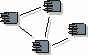
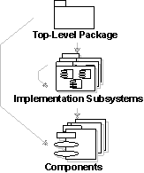
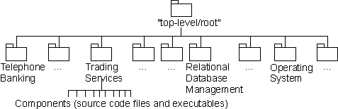

Guidelines:
Implementation Model

Implementation Model |
An
implementation model is a collection of components, and the
implementation subsystems which contain them. Components include both
deliverable components, such as executables, and components from which the
deliverables are produced, such as source code files. |
Topics
Explanation

The implementation model is a hierarchy of implementation subsystems, with
leaves that are components. There is a package that serves as the top-level
(root) node in the implementation model. A subsystem is a collection of
components and other subsystems. A component resides in a single subsystem, or
at the top level of the implementation model.
In the programming environment, components take the form of source code in
files, binary files, and data files, organized in directories; subsystems are
materialized in the form of directories, with additional structural or
management information.

The notation in the implementation model. The arrows show
possible ownership.
The implementation model can be divided into components that are deliverables,
such as executables that are delivered to customers; and those components from
which the deliverables are produced, such as source code. For more information,
see Guidelines: Component.
Example:
In a banking system the implementation subsystems are
organized as a flat structure in the top-level node of the implementation model.
Another way of viewing the subsystems in the implementation model is in layers.
(See Guidelines: Import Dependency).

The implementation model for a banking system, showing
the ownership hierarchy.
Use
The implementation model can be more or less close to the design model,
depending on how you map the classes, packages and subsystems in the design
model to components, packages and subsystems in the implementation model.
For more information, about how to map classes in design to components, See
the Activity: Implement Component.
For more information, about how to map packages in design to subsystems,
refer to the Activity: Structure the
Implementation Model.
You should decide how the design model relate to the implementation model;
this should be captured in the Artifact:
Design Guidelines specific to the project.
Copyright
© 1987 - 2001 Rational Software Corporation
|  Artifacts >
Artifacts >
 Implementation Artifact Set >
Implementation Artifact Set >
 Implementation Model... >
Implementation Model... >
 Implementation Model >
Implementation Model >
 Guidelines >
Guidelines >